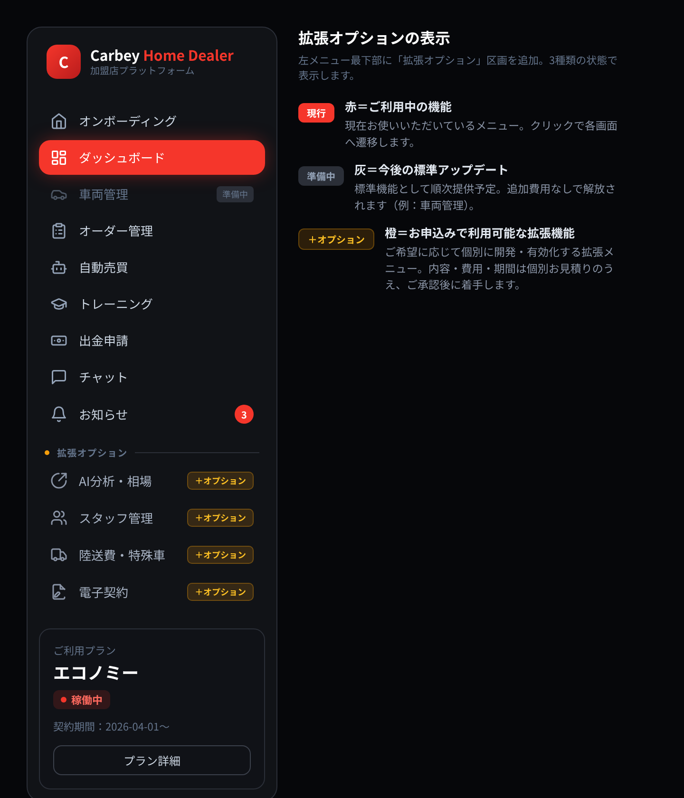

版：Version 1.0 作成日：2026-07-26 対象：カーベイ FC 加盟店プラットフォーム（Home Dealer）
本書は、左メニューに新設する「拡張オプション」区画の表示イメージと、拡張機能をご利用いただくまでの流れ・費用の考え方・期間の目安・ご準備いただくものをまとめたものです。
左メニューの最下部に「拡張オプション」区画を新設し、将来ご利用いただける機能をあらかじめ可視化します。「どんな拡張ができるか」がひと目で分かり、ご希望の機能をそのままお申し込みいただける導線です。

| 表示 | 色 | 意味 | 費用 |
|---|---|---|---|
| 現行 | 赤 | 現在ご利用中のメニュー（クリックで各画面へ） | プラン内 |
| 準備中 | 灰 | 今後の標準アップデートで解放される機能 | 追加費用なし |
| ＋オプション | 橙 | お申込みで個別に開発・有効化する拡張機能 | 個別お見積り |
現時点で拡張候補としてご提案できる機能です。左メニューに表示する機能をお選びください（表示は後からでも追加・変更できます）。
| 機能 | 概要 | 区分 |
|---|---|---|
| AI分析・相場 | 市場・相場データの分析、AIによる仕入れ・販売の意思決定支援 | ＋オプション |
| スタッフ管理 | 加盟店内のサブアカウント発行・権限分け（担当者ごとのログイン） | ＋オプション |
| 陸送費・特殊車見積 | 陸送費マスタによる自動計算、特殊車両の個別見積 | ＋オプション |
| 電子契約 | 契約・各種書面の電子署名／オンライン締結 | ＋オプション |
| 半自動売買の高度化 | 預かり金台帳・超過オーダー制限・自動精算などの業務自動化 | ＋オプション |
| API／外部連携 | 会計・在庫・他システムとのデータ連携 | ＋オプション |
※上記以外にも、貴社の運用に合わせた機能を随時ご提案いたします。ご要望をお聞かせください。
拡張機能は、以下の流れで進めます。内容・費用・期間にご承認をいただいてから着手しますので、ご想定外の費用が発生することはありません。
| ステップ | 内容 | 主担当 |
|---|---|---|
| ① ご相談 | メニューの「相談する」またはチャットからご依頼。実現したいことをお伝えいただきます | 加盟店 |
| ② 要件整理 | 内容をヒアリングし、機能範囲・仕様を整理します | 本部／開発 |
| ③ お見積り | 費用・期間・ご準備物を書面でご提示します | 開発 |
| ④ ご承認 | 内容・費用にご同意いただき、正式発注 | 加盟店 |
| ⑤ 開発 | 設計・実装。必要に応じて途中経過を共有します | 開発 |
| ⑥ 動作確認 | テスト環境でご確認いただきます | 加盟店／開発 |
| ⑦ リリース | 本番環境へ反映し、メニューを有効化します | 開発 |
| ⑧ ご利用開始 | 操作方法をご案内し、運用開始 | 本部 |
規模により異なりますが、目安は以下の通りです（正確な期間は③お見積り時にご提示します）。
| 規模 | 例 | 目安 |
|---|---|---|
| 小 | 表示項目・帳票の追加、軽微な画面調整 | 数日〜1週間程度 |
| 中 | 1機能の新規追加（例：スタッフ管理、陸送費見積） | 2〜4週間程度 |
| 大 | 業務フロー全体の自動化・外部システム連携 | 1〜数ヶ月程度 |
スムーズに進めるため、拡張内容に応じて以下をご用意ください（該当するもののみ）。
以下をお知らせください。いただいた内容をもとに、左メニューへの表示と初回のご提案を進めます。
本書は Ver 1.0 です。表示機能の追加・プロセスの更新に応じて改訂します。